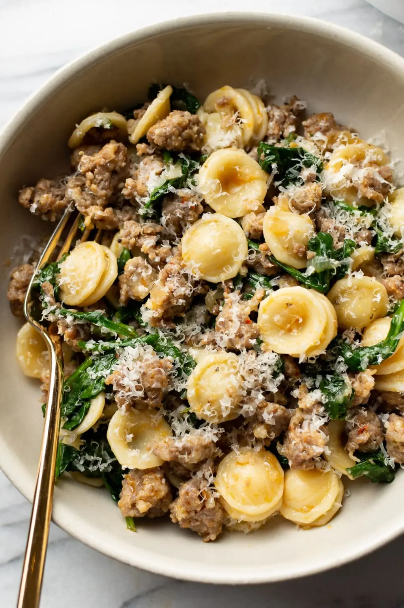

Orecchiette with sausage and spinach
- Total time30 mins
- Serves4
- Ingredients10
- Steps6

Ingredients
- 8 ounces uncooked orecchiette pasta
- 16 ounces Italian sausage
- 1/2 medium onion chopped
- 4 cloves garlic minced
- 1/2 teaspoon Dijon mustard
- 1/2 cup dry white wine
- 3 cups (packed) fresh baby spinach
- 2 tablespoons fresh basil
- Salt & pepper to taste
- For serving: freshly grated parmesan cheese optional, to taste
Directions
- Boil a large salted pot of water and cook the pasta al dente according to package directions.
- Meanwhile, add the sausage meat and onion to a skillet, and sauté over medium-high heat for 8-10 minutes or until it's cooked through and nicely browned. If there's more than about 1-2 tablespoons of fat left in the skillet, spoon out the excess, but be sure to leave some since we're not adding any extra butter or oil.
- Reduce the heat to medium, stir in the garlic and Dijon mustard, and cook for about 30 seconds.
- Pour in the wine and cook until reduced by half (about 1-2 minutes).
- Add in the spinach and basil (if using). Toss, using tongs or two large spoons, until the spinach has wilted, then add in the drained pasta and toss again.
- Season with salt & pepper as needed. Serve immediately with freshly grated parmesan cheese over top if desired.
Recipe credit: saltandlavender.com